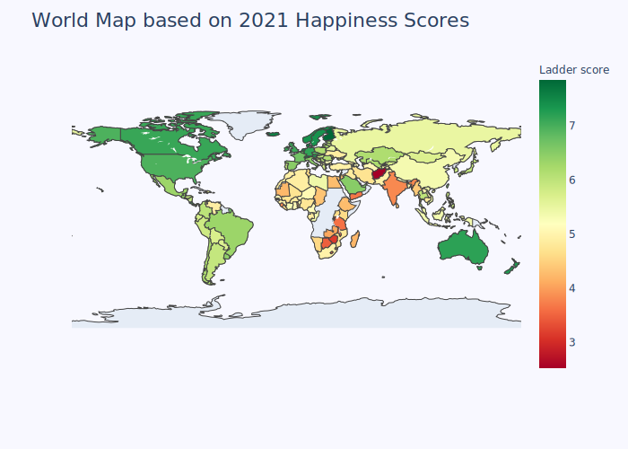
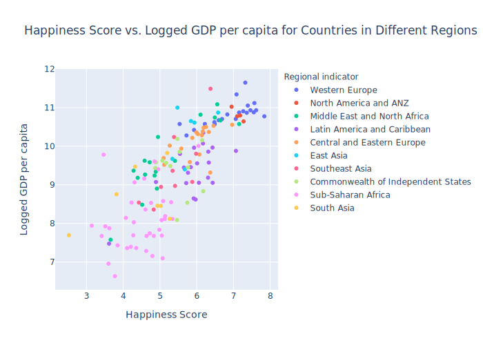
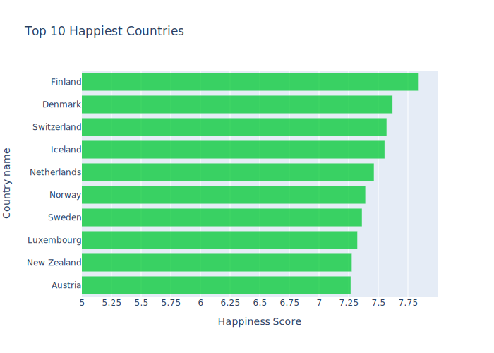
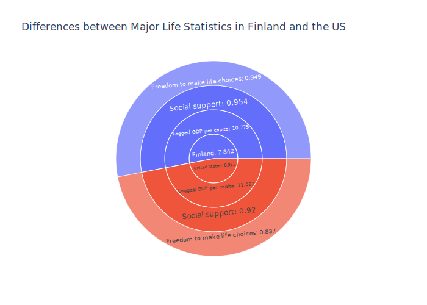
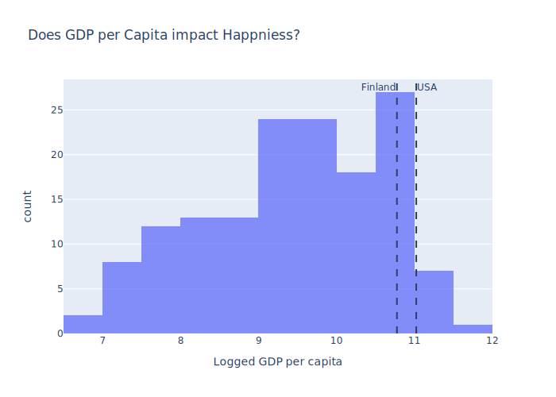
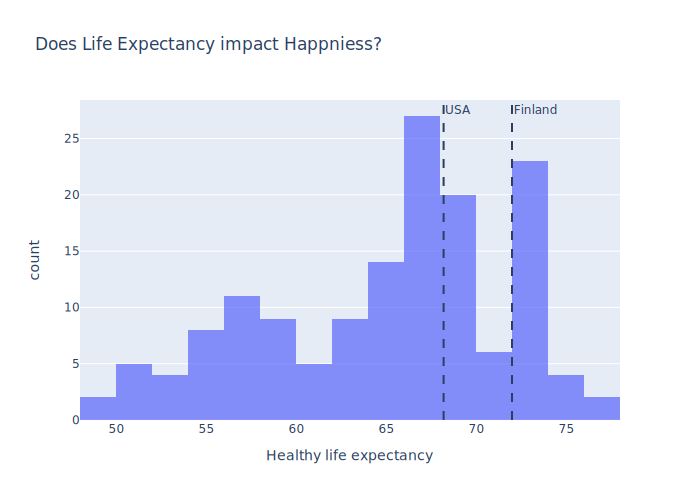
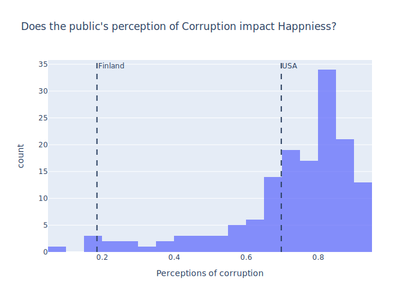
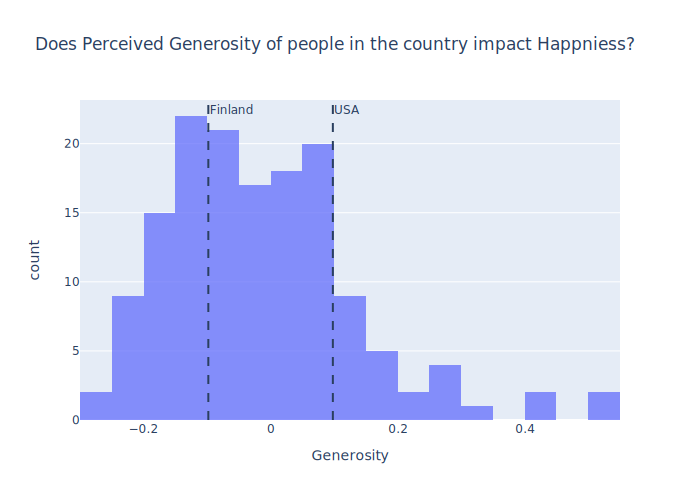
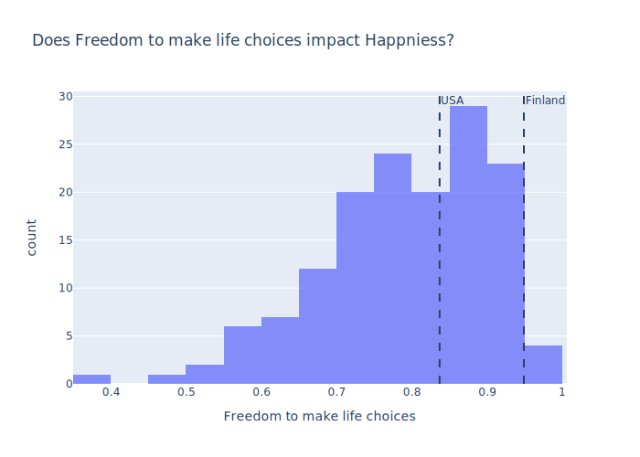

What is the Happiest Place on Earth?

After observing the map, we notice that Scandinavian countries have some of the highest happiness scores as seen by their dark green hue. We also notice that there are some countries missing which occured due to missing data in our dataset.
Is there a Substantial Discrepancy in Happiness over the Various Regions?

By observing the bubble plot, we can notice that 'Western Europe' is by far the leader when it comes to happiness scores. We also notice that while most countries in 'Latin America' are relatively happy, there is one that is along side the 'Sub-Saharan Africa' countries as some of the least happy countries.
What are some of the Happiest Countries in the World?

As we observed earlier, Scandinavian countries make up most of the top happiest countries with a surprising appearance from New Zealand at rank 9. Also notice that the difference bewtween rank 1 and rank 2 is greater than the difference between rank 2 and rank 10.
How does the US compare to the Happiest Country in the World?

While many consider the US to be the 'best' country in the world, when compared to Finland we can see that having more money does not necessarily lead to happier people.
How do Different Social Statistics affect Happiness Score?

While GDP per capita is a good statistic to measure how well off people in a country are, having a higher value for it does not necessarily imply that the people are happy. However, we can say that having a relatively high GDP per capita helps the overall happiness score of a country.

By observing the above plot, we notice that Finland has a relatively high life expectancy which implies the existence of a robust healthcare system. On the other hand, the US has a much lower life expectancy which is a result of the mismanaged health care system of the US. Based on this, having a higher life expectancy does impact the happiness of the people.

How corrupt the people think that their government is has a substantial impact on the quality of life in the country. Looking above, we can see a clear difference in the perception of two different governments and how having more trust in your government leads to a better overall quality of life which increases happiness.

How generous the people in a country are seems have a somewhat random distribution of values. The values themselves are the only ones that go into the negatives which makes it hard to ascertain the true meaning behind the data. However, we can also see that there is no strong relation to happiness based on this metric.

Looking above, having more freedom to express yourself without being worried about being harmed for it has a substantial impact on the happiness of people. However, considering the US is the 'land of the free' their score is surprisingly low and its impact can be felt on the happiness score of the US.